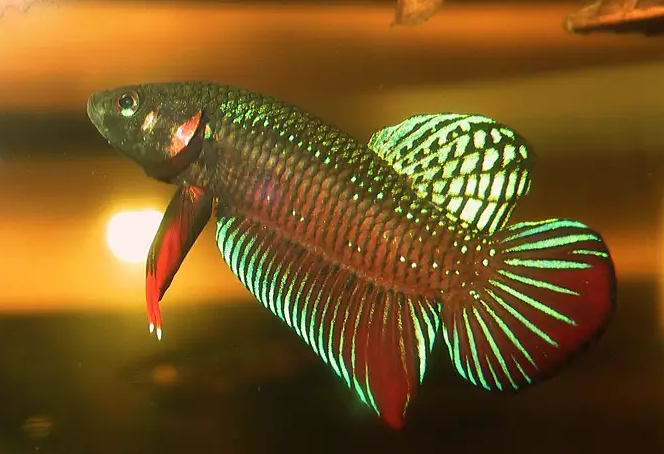

Systématique
- Ordre : Anabantiformes
- Famille : Osphronemidae
- Genre : Betta
- Espèce : B. splendens
- Groupe : Complexe splendens

Betta splendens, le combattant du Siam, est le deuxième poisson d'eau douce le plus populaire en aquariophilie après le poisson rouge, grâce à ses colorations flamboyantes, son comportement territorial fascinant et sa facilité d'élevage.
À l'état sauvage, le mâle atteint 5 à 6,5 cm; en captivité, avec sélection pour nageoires voilées, il peut dépassser 8–10 cm. La femelle mesure 4 à 5 cm. Le corps est fusiforme, légèrement comprimé latéralement, avec une tête petite et conique. La bouche est légèrement tournée vers le haut, facilitant l'alimentation en surface. L'œil est grand et mobile avec un iris irisé bleu-vert à doré.
La coloration naturelle du mâle affiche un dégradé fondamental vert, rouge, bleu et noir, parsemé de motifs verticaux et longitudinaux. En captivité, des sélections ornementales massives ont produit des formes aux nageoires hypertrophiées (voilées) : rouge solide, bleu solide, jaune, blanc (platinum), noir (melano), doré, marbre, dalmatien, koi, et d'autres morphes complexes. La femelle est nettement moins colorée, gris-brun terne, avec des nageoires courtes. Les nageoires dorsales, anales et caudales sont les plus développées, formant souvent une voilure spectaculaire chez le mâle.
Betta splendens est une espèce solaire hautement territoriale, le mâle adulte ne tolérant aucun congénère mâle dans son environnement. Le comportement agressif est le fondement de sa biologie reproductive : les mâles rivaux se battent violemment, déployant leurs nageoires en éventail et gonflant leurs opercules pour impressionner l'adversaire. En nature, ces combats réduisent les populations de mâles, réduisant ainsi la compétition sexuelle.
En aquarium, un mâle doit être maintenu obligatoirement seul, sauf durant la brève période de reproduction. L'espèce tolère généralement bien les autres poissons, restant pacifique en dehors des périodes de frai. Cependant, elle affiche une agressivité extrême lors de la défense de sa ponte. L'espèce possède un labyrinthe, lui permettant de respirer l'air atmosphérique et justifiant sa capacité à vivre dans des eaux stagnantes peu oxygénées. Elle peut respirer hors de l'eau pendant 2 à 3 heures, survivant même à l'asphyxie temporaire. L'espèce peut sauter hors de l'eau et le bac doit être couvert. Elle occupe naturellement la zone semi-pélagique et la surface, se tenant souvent sous la végétation flottante.
Mode : ovipare constructeur de nid de bulles; l'une des reproductions les plus spectaculaires à observer en aquariophilie.
Le mâle construit un nid flottant rassemblant de petites bulles d'air enrobées de mucus salivaire, créant une structure adhésive d'environ 8 cm de diamètre et 2 cm d'épaisseur. Le mâle alterne entre la séduction (nageoires déployées) et la construction. La femelle prête à pondre affiche des bandes verticales transversales (stries) et se maintient la tête vers le bas. Le mâle exécute des allers-retours incessants entre la femelle et le nid, l'invitant à le rejoindre.
L'enlacement reproducteur dure quelques secondes : le mâle s'enroule autour de la femelle, leur deux corps vibrent et les œufs s'écoulent lentement. Généralement 50 à 500 œufs sont pondus en une à quelques heures. Après chaque enlacement, la femelle reste inerte quelques secondes; le mâle récupère rapidement les œufs avant qu'ils ne touchent le fond et les place dans le nid. À son réveil, la femelle se précipite aussi sur les œufs, les mangeant souvent. Après la ponte, le mâle devient violemment agressif envers la femelle et doit être retiré pour la préserver.
L'éclosion intervient après 24 à 36 heures à 26–28 °C. Le mâle soigne jalousement le nid, gonflant des bulles pour renforcer la structure et replacer les jeunes qui tombent. Les alevins absorbent leur sac vitellin en 3 à 4 jours, puis deviennent libres. Le développement du labyrinthe commence vers 3–4 semaines; la surface de l'eau doit rester très humide (pas de courant d'air direct, couvercle partiel) pour que les jeunes respirent un air chaud et humide, primordial au développement sain de cet organe.
Dimorphisme sexuel : très marqué et très visible. Le mâle est franchement plus coloré et arbore des nageoires bien plus développées que la femelle, formant souvent une voilure spectaculaire en captivité. La femelle est gris-brun terne avec une papille génitale blanche bien visible à l'avant de la nageoire anale à maturité. Lors de la parade, la femelle se strie de bandes noires verticales (sauf chez les femelles très claires), signal de réceptivité reproductrice.
Espérance de vie : 3 à 5 ans en captivité en conditions optimales. Quelques spécimens bien soignés, en eau très propre et changée régulièrement, dépassent occasionnellement 6–7 ans. L'élevage intensif en captivité a fragilisé l'espèce, réduisant la robustesse et la longévité par rapport aux populations sauvages.
Betta splendens fréquente naturellement les rizières peu profondes, les ruisseaux lents, les étangs et marécages d'Asie du Sud-Est, depuis la péninsule malaise jusqu'au Laos, Vietnam, Myanmar, Thaïlande et Cambodge. L'habitat affiche une eau peu profonde (moins de 50 cm typiquement), stagnante ou à courant très lent, avec une forte densité de végétation aquatique et palustre. La végétation submergée inclut Vallisneria, Cryptocoryne, racines et branches mortes. En période sèche, l'espèce se retrouve isolée dans de petits trous d'eau peu oxygénés où sa capacité labyrinthienne la maintient en vie.
L'eau affiche une légère acidité (pH 6,5–7,5), une minéralisation faible à modérée (GH 5–20). La temperature avoisine 24–28 °C naturellement. L'espèce tolère bien les variations saisonnières du climat tropical à mousson. Le substrat est généralement composé de sable et d'humus. L'eau peut être teintée de tannins lors de la décomposition de matière organique.
Répartition

Origine naturelle :
- Asie du Sud-Est : Thaïlande, Laos, Cambodge, Vietnam, Myanmar, Malaisie péninsulaire, Sumatra et Bornéo, Indonésie.
- Distribution principale le long des cours d'eau stagnants du bassin du Mékong et des zones côtières.
- Localité type : bassins d'eau douce de Thaïlande centrale et du sud.
- Introduction accidentelle signalée au Brésil, Colombie, Philippines, Singapour, États-Unis, Canada et République dominicaine avec établissement de petites colonies sauvages.
L'espèce figure sur la liste rouge IUCN comme « Vulnérable » (VU). Les populations naturelles sont menacées par la destruction des rizières, la pollution agricole, l'exploitation pétrolière et le changement climatique. Cependant, l'élevage massif en captivité (millions d'individus annuels) en Thaïlande et d'autres pays asiathiques assure la pérennité de l'espèce en tant que telle.
Paramètres de maintenance
Température : 19 à 30 °C, optimum 24–28 °C; les températures inférieures à 20°C ralentissent le métabolisme; la reproduction est optimale à 26–28 °C.
pH : 6,0 à 7,5, légèrement acide à neutre; pH 6,8–7,2 est idéal. L'espèce tolère bien une large gamme.
GH : 3 à 12 °dGH, eau douce à moyennement dure; pas d'exigence stricte.
Courant : nul à très faible; la filtration doit être très douce, sans turbulence en surface.
Volume conseillé : minimum 15–20 L pour un mâle seul en bac entretenu; 30 L recommandé pour plus de confort. Très planté, lumière tamisée par des plantes flottantes, nombreux refuges. Couvercle obligatoire.
Régime alimentaire
Régime : carnivore insectivore; se nourrit principalement d'insectes aquatiques en nature.
En aquarium, accepte flocons fins, granulés, paillettes et nourriture congelée (daphnies, artémias, vers de vase, larves de moustiques). Les proies vivantes sont fortement recommandées pour optimiser les couleurs, maintenir la santé et préparer la reproduction.
Distribution 1 à 2 fois par jour en petites quantités. L'espèce est sensible à l'obésité, risque important chez cette espèce peu active. Jeûne occasionnel (1 jour par semaine) est très bénéfique. Alimentation variée maintient la vivacité, les couleurs et les performances reproductives.